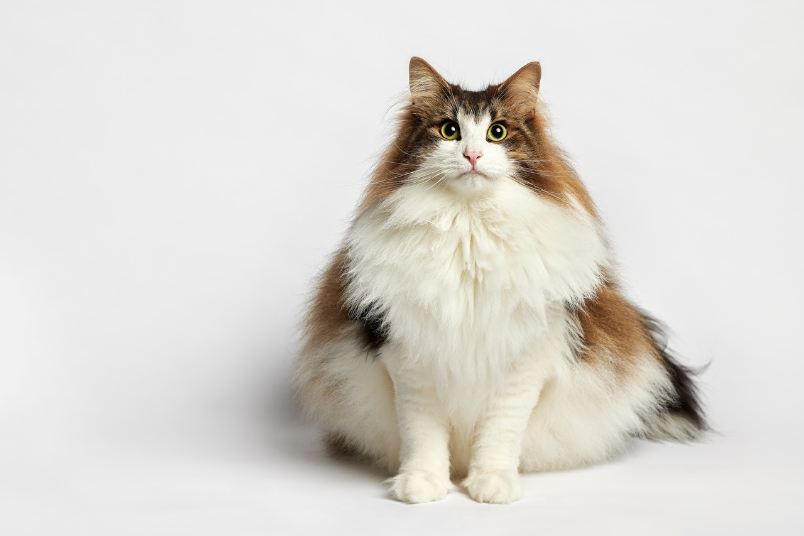

У моей мамы живет кошка Муся. Нашли ее глубокой ночью посреди проезжей части. Она была малююююсеньким котенком и её сбила машина.
Мы повезли её к ветеринару, но уже не питали никаких надежд, что она выживет. Было очень жалко её!
И теперь это большая и толстая кошка.
